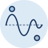

Quais são os transtornos?
Nesta página você pode escolher um transtorno para conhecer suas principais características. Clique em um dos cartões abaixo para ir diretamente à seção correspondente.
As informações deste site são educativas e não substituem a avaliação de um profissional de saúde. Só psicólogos e médicos podem fazer um diagnóstico.

TAG
Transtorno de Ansiedade Generalizada: preocupação excessiva e persistente com diversas áreas da vida.
Ansiedade Social
Medo intenso de situações sociais e de ser avaliado negativamente por outras pessoas.

Depressão
Pode envolver tristeza persistente, perda de interesse e alterações no cotidiano.

TOC
Envolve obsessões e/ou compulsões que podem causar sofrimento e interferir na vida.

Transtorno Bipolar
Caracterizado por episódios de alterações importantes de humor e energia.
Esquizofrenia
Transtorno complexo que pode afetar percepção, pensamento e comportamento.
TDAH
Pode envolver desatenção, impulsividade e hiperatividade.
TEA
Condição do neurodesenvolvimento que pode afetar comunicação e interação social.
Estresse Pós-Traumático
Pode surgir após a vivência ou exposição a eventos traumáticos.
Transtorno de Pânico
Envolve crises de pânico recorrentes e medo intenso associado a elas.
Transtorno Borderline
Padrão de instabilidade emocional, nas relações e na autoimagem, com impulsividade.
TDI
Transtorno Dissociativo de Identidade: presença de duas ou mais identidades distintas.
Transtorno de Ansiedade Generalizada (TAG)
O que é
O Transtorno de Ansiedade Generalizada (TAG) é uma condição de saúde mental caracterizada por preocupação excessiva e difícil de controlar sobre situações do dia a dia, como escola, trabalho, saúde, dinheiro ou família. Diferente da ansiedade comum, a preocupação no TAG é frequente, dura por longos períodos e pode interferir na rotina e na qualidade de vida.
Impactos negativos
O TAG pode afetar diferentes áreas da vida, como estudos, trabalho, relacionamentos e atividades cotidianas. A preocupação constante também pode causar dificuldades para dormir, cansaço e problemas de concentração. Em períodos de maior estresse, os sintomas podem se intensificar e tornar ainda mais difícil realizar as atividades do dia a dia.
Sintomas
Os sintomas podem ser emocionais, cognitivos e físicos. Entre os mais comuns estão: preocupação excessiva e dificuldade para controlá-la, inquietação ou sensação de estar sempre “em alerta”, irritabilidade, dificuldade de concentração, cansaço frequente, tensão muscular, dificuldade para dormir, dores de cabeça ou musculares, problemas no estômago, tontura, suor excessivo ou falta de ar.
Diagnóstico
O diagnóstico é feito por um profissional de saúde, como psicólogo ou psiquiatra. Durante a avaliação, são analisados os sintomas, há quanto tempo estão presentes e quanto interferem na vida da pessoa. De acordo com os critérios clínicos, o TAG envolve preocupação difícil de controlar na maior parte dos dias por pelo menos seis meses, acompanhada de outros sintomas de ansiedade. O profissional também pode avaliar outras condições que apresentem sintomas semelhantes.
Tratamento
O TAG pode ser tratado. A psicoterapia, especialmente a Terapia Cognitivo-Comportamental (TCC), ajuda a identificar e modificar padrões de pensamento que alimentam a preocupação. Em alguns casos, o médico psiquiatra pode indicar medicamentos. Hábitos como dormir bem, praticar atividade física e reduzir o consumo de cafeína também podem ajudar, mas não substituem o acompanhamento profissional.
↑ Voltar para o topoAnsiedade Social
O que é
O Transtorno de Ansiedade Social (TAS), também conhecido como fobia social, é uma condição caracterizada por medo e ansiedade intensos em situações que envolvem outras pessoas. Quem apresenta TAS pode ter medo de ser julgado, criticado, rejeitado ou passar vergonha. Por isso, situações comuns, como conversar, apresentar um trabalho ou participar de eventos, podem se tornar muito difíceis.
Diagnóstico
O diagnóstico do TAS é realizado por profissionais da saúde, considerando os sintomas, pensamentos e comportamentos apresentados pela pessoa. Durante a avaliação, podem ser utilizadas escalas e questionários que ajudam a identificar o nível de ansiedade, o medo de situações sociais e a frequência de comportamentos de evitação. Essas ferramentas complementam a avaliação profissional e ajudam a compreender melhor o impacto do transtorno.
Principais características
Entre as principais características do TAS estão o medo de ser julgado ou rejeitado, os pensamentos negativos e a dificuldade de lidar com situações sociais. A pessoa pode evitar conversar, fazer contato visual, falar em público ou participar de eventos por insegurança. Também pode interpretar situações neutras de maneira negativa e apresentar sintomas físicos, como suor excessivo, tremores, coração acelerado e nervosismo intenso.
Impactos negativos
O TAS pode afetar diferentes áreas da vida. O medo constante de ser julgado pode levar ao isolamento social, dificultar a criação de amizades e prejudicar os estudos, o trabalho e outras atividades do dia a dia. A ansiedade também pode fazer com que a pessoa evite oportunidades ou enfrente situações comuns com grande sofrimento. Quando os sintomas são intensos, buscar ajuda profissional é importante para reduzir esses impactos e melhorar a qualidade de vida.
Tratamento e possibilidades de melhora
Um aspecto importante é que o TAS pode ser tratado. A terapia, especialmente a Terapia Cognitivo-Comportamental (TCC), pode ajudar a pessoa a compreender e modificar pensamentos negativos, enfrentar situações sociais gradualmente e desenvolver mais confiança. Em alguns casos, profissionais de saúde também podem indicar outras formas de tratamento. Quanto mais cedo os sintomas forem identificados e acompanhados, maiores podem ser as possibilidades de reduzir seus impactos no cotidiano.
↑ Voltar para o topo
Depressão
O que é
A depressão é uma condição de saúde mental que vai além de uma tristeza passageira. Ela pode causar alterações persistentes no humor, no interesse pelas atividades e na disposição, afetando diferentes áreas da vida. A depressão também pode apresentar diferentes formas e intensidades. Não é “falta de vontade” nem fraqueza: é uma condição que pode ser tratada com acompanhamento adequado.
Impactos negativos
A depressão pode afetar o rendimento escolar e profissional, os relacionamentos e o cuidado com a própria saúde. A falta de energia e de motivação pode tornar tarefas simples muito difíceis, e a pessoa pode se afastar de amigos e familiares. Sem acompanhamento, os sintomas tendem a se prolongar e a causar ainda mais sofrimento.
Sintomas
Entre os sintomas mais comuns estão: tristeza ou sensação de vazio na maior parte do dia, perda de interesse ou prazer em atividades antes prazerosas, cansaço e falta de energia, alterações no sono (insônia ou sono em excesso), alterações no apetite e no peso, dificuldade de concentração e de tomar decisões, e sentimentos de culpa ou de inutilidade. Pensamentos recorrentes sobre morte ou sobre se machucar são um sinal importante e merecem atenção imediata: procure um serviço de saúde ou ligue para o CVV (188).
Diagnóstico
O diagnóstico é feito por um profissional de saúde, como psiquiatra ou psicólogo, a partir de uma avaliação clínica. De acordo com os critérios clínicos, a pessoa deve apresentar pelo menos cinco sintomas, incluindo humor deprimido ou perda de interesse e prazer, na maior parte do dia, quase todos os dias, por pelo menos duas semanas, com prejuízo na vida cotidiana. Como outras condições (como alterações na tireoide) podem causar sintomas parecidos, o profissional pode solicitar exames.
Tratamento
A depressão tem tratamento. Ele pode incluir psicoterapia, medicamentos antidepressivos (prescritos por médico) ou a combinação dos dois, de acordo com a intensidade do quadro. Manter uma rotina de sono, praticar atividade física e contar com uma rede de apoio de amigos e familiares também ajuda na recuperação. A maioria das pessoas melhora com o tratamento adequado.
↑ Voltar para o topo
Transtorno Obsessivo-Compulsivo (TOC)
O que é
O Transtorno Obsessivo-Compulsivo (TOC) envolve obsessões, que são pensamentos, imagens ou impulsos indesejados e recorrentes que causam angústia, e compulsões, que são comportamentos ou atos mentais repetitivos que a pessoa sente que precisa realizar para aliviar essa angústia ou evitar que algo ruim aconteça. O TOC vai muito além de ser organizado ou perfeccionista: ele causa sofrimento e foge do controle da pessoa.
Impactos negativos
Os sintomas podem consumir muito tempo do dia, causar atrasos, dificultar os estudos e o trabalho e gerar cansaço mental. Muitas pessoas sentem vergonha ou medo de serem julgadas e acabam escondendo os sintomas, o que pode atrasar a busca por ajuda e levar ao isolamento.
Sintomas
As obsessões podem incluir medo de contaminação, dúvidas constantes (como se a porta foi trancada ou o fogão foi desligado), necessidade de simetria ou ordem e pensamentos intrusivos indesejados. As compulsões podem incluir lavar as mãos repetidamente, verificar coisas várias vezes, contar, repetir ações, organizar objetos de uma forma específica ou repetir palavras e orações mentalmente.
Diagnóstico
O diagnóstico é clínico, feito por psiquiatra ou psicólogo. De acordo com os critérios clínicos, a pessoa apresenta obsessões, compulsões ou ambas, que consomem tempo (mais de uma hora por dia) ou causam sofrimento significativo e prejuízo na vida cotidiana. O profissional também avalia se os sintomas não são explicados por outra condição ou pelo uso de substâncias.
Tratamento
O TOC pode ser tratado. A Terapia Cognitivo-Comportamental, em especial a técnica de exposição e prevenção de resposta, tem bons resultados. Em alguns casos, o médico psiquiatra também pode indicar medicamentos. O apoio e a compreensão da família e dos amigos fazem diferença ao longo do tratamento.
↑ Voltar para o topoTranstorno Bipolar
O que é?
O transtorno bipolar (TAB) é uma condição psiquiátrica que afeta cerca de 1% a 2% da população. É caracterizado por mudanças intensas de humor, que podem afetar significativamente a vida cotidiana.
Impactos negativos
Os principais episódios são depressão, mania e hipomania. Na depressão, podem surgir tristeza profunda, falta de energia, desmotivação e perda de interesse. Na mania, são comuns euforia ou irritabilidade intensa, agitação, impulsividade e excesso de energia. A hipomania apresenta sintomas semelhantes, porém de forma menos intensa.
Sintomas
Na depressão, podem surgir: tristeza profunda, falta de energia, desmotivação e perda de interesse. Na mania, são comuns: euforia ou irritabilidade intensa, agitação, impulsividade e excesso de energia. A hipomania apresenta sintomas semelhantes aos da mania, porém de forma menos intensa.
Genética
O transtorno possui forte componente genético, com herdabilidade estimada entre 60% e 85%, mas não existe um único gene responsável. Fatores como estresse intenso, traumas, uso de álcool e drogas, alterações no sono e acontecimentos marcantes também podem influenciar.
Diagnóstico
O diagnóstico é feito por profissionais de saúde mental, considerando os sintomas, o histórico e a avaliação clínica do paciente. Não existe um exame específico capaz de confirmar o transtorno bipolar sozinho.
Tratamento
O tratamento costuma combinar medicamentos prescritos por psiquiatra (como os estabilizadores de humor), psicoterapia e psicoeducação. Manter uma rotina regular de sono e acompanhar o tratamento de forma contínua, mesmo nos períodos sem sintomas, ajuda a prevenir novos episódios.
↑ Voltar para o topoEsquizofrenia
O que é
A esquizofrenia é um transtorno mental complexo que pode afetar a percepção da realidade, o pensamento, as emoções e o comportamento. A Organização Mundial da Saúde estima que atinja cerca de 1 em cada 300 pessoas, e ela costuma começar entre o final da adolescência e o início da vida adulta. Ao contrário do que muita gente pensa, a esquizofrenia não é “dupla personalidade” nem “múltiplas personalidades”.
Impactos negativos
O transtorno pode dificultar os estudos, o trabalho e os relacionamentos, além de levar ao isolamento. O preconceito também agrava o sofrimento: a maioria das pessoas com esquizofrenia não é violenta e, com acompanhamento adequado, muitas conseguem estudar, trabalhar e ter uma vida social.
Sintomas
Os sintomas costumam ser divididos em grupos. Os sintomas positivos incluem alucinações (perceber coisas que não existem, como ouvir vozes), delírios (crenças firmes que não correspondem à realidade) e pensamento ou fala desorganizados. Os sintomas negativos incluem apatia, diminuição da expressão emocional, falta de motivação e isolamento. Também podem ocorrer dificuldades de atenção e de memória.
Diagnóstico
O diagnóstico é clínico e feito por psiquiatra. De acordo com os critérios clínicos, a pessoa deve apresentar dois ou mais sintomas característicos (sendo pelo menos um deles delírios, alucinações ou fala desorganizada) por um período significativo de pelo menos um mês, com sinais do transtorno por pelo menos seis meses e prejuízo no funcionamento. O profissional também avalia se os sintomas não são causados por substâncias ou por outras condições de saúde.
Tratamento
O tratamento é contínuo e combina medicamentos antipsicóticos prescritos por psiquiatra, psicoterapia, apoio da família e acompanhamento multiprofissional, incluindo ações de reabilitação psicossocial. Com tratamento e apoio, muitas pessoas conseguem controlar os sintomas e ter boa qualidade de vida.
↑ Voltar para o topoTDAH
O que é?
O Transtorno do Déficit de Atenção com Hiperatividade (TDAH) é uma condição do neurodesenvolvimento que pode envolver desatenção, hiperatividade e impulsividade. Ele começa na infância e pode continuar na vida adulta. Não é preguiça, falta de educação ou falta de interesse. Pode se manifestar de forma predominantemente desatenta, predominantemente hiperativa/impulsiva ou combinada.
Impactos negativos
O TDAH pode causar dificuldades de organização, de cumprir prazos e de manter o foco nos estudos ou no trabalho, fazendo o desempenho ficar abaixo do potencial da pessoa. Também pode gerar conflitos com colegas e familiares e afetar a autoestima. Sem acompanhamento, é comum que surjam outras dificuldades, como ansiedade e desmotivação.
Sintomas
A desatenção inclui se distrair com facilidade, esquecer compromissos, perder objetos, ter dificuldade de seguir instruções e de terminar tarefas. A hiperatividade inclui inquietação, dificuldade de ficar sentado e falar demais. A impulsividade inclui interromper os outros, ter dificuldade de esperar a vez e agir sem pensar nas consequências.
Diagnóstico
O diagnóstico é clínico e não existe um exame único que o confirme. De acordo com os critérios clínicos, os sintomas devem estar presentes por pelo menos seis meses, ter aparecido antes dos 12 anos, ocorrer em dois ou mais ambientes (como casa, escola ou trabalho) e causar prejuízo. A avaliação pode incluir relatos da família e da escola.
Tratamento
O acompanhamento costuma ser multiprofissional e pode incluir orientação sobre o transtorno (psicoeducação), psicoterapia, estratégias de organização, adaptações no ambiente escolar e, em alguns casos, medicamentos prescritos por médico.
↑ Voltar para o topoTranstorno do Espectro Autista (TEA)
O que é?
O Transtorno do Espectro Autista (TEA) é uma condição do neurodesenvolvimento que apresenta características relacionadas à comunicação, interação social e padrões de comportamento. É chamado de “espectro” porque se manifesta de formas e intensidades muito diferentes de uma pessoa para outra, e por isso cada pessoa autista pode precisar de níveis diferentes de apoio. Está presente desde a infância e não é uma doença nem é causado pela forma como a criança é criada.
Características
Entre as características mais comuns estão dificuldades na comunicação e na interação social (como manter conversas, entender ironias e expressões faciais), comportamentos repetitivos, preferência por rotinas e interesses muito intensos por determinados assuntos. Também é comum a sensibilidade a sons, luzes, texturas e outros estímulos.
Desafios no dia a dia
Sem compreensão e apoio, situações como ambientes barulhentos, mudanças inesperadas de rotina e atividades em grupo podem ser difíceis. O preconceito e a falta de adaptações na escola e no trabalho também podem dificultar a inclusão. Com respeito e apoio adequados, pessoas autistas podem estudar, trabalhar e ter relações sociais.
Diagnóstico
O diagnóstico é clínico, realizado por profissionais de saúde, geralmente em equipe multiprofissional, a partir da observação do comportamento e do desenvolvimento. Os sinais costumam aparecer nos primeiros anos de vida. Não existe exame de sangue ou de imagem que confirme o TEA. Quanto mais cedo for identificado, mais cedo a pessoa pode receber apoio.
Apoio e inclusão
O TEA não tem “cura”, mas existem acompanhamentos que ajudam no desenvolvimento e na autonomia, como terapias, fonoaudiologia, terapia ocupacional e apoio escolar, de acordo com a necessidade de cada pessoa. A inclusão e o respeito às diferenças são fundamentais.
↑ Voltar para o topoTranstorno de Estresse Pós-Traumático
O que é?
O Transtorno de Estresse Pós-Traumático (TEPT) é uma condição psicológica que pode surgir após uma pessoa vivenciar ou testemunhar uma situação traumática, assustadora ou violenta. Mesmo depois que o perigo termina, a pessoa pode continuar sentindo medo, ansiedade e sofrimento relacionados ao acontecimento.
Impactos negativos
O TEPT pode causar mudanças na forma como a pessoa pensa, sente e reage, interferindo nos estudos, no trabalho, nos relacionamentos e em outras atividades do cotidiano. Os sintomas podem variar de acordo com cada indivíduo, dependendo de fatores como a intensidade e a duração da experiência traumática.
Sintomas
Entre os sintomas estão lembranças involuntárias e angustiantes, pesadelos, flashbacks, dificuldade para dormir, irritabilidade, problemas de concentração e estado constante de alerta. Também pode ocorrer a tentativa de evitar lugares, pessoas, conversas ou situações que façam a pessoa lembrar do trauma.
Diagnóstico
O diagnóstico do transtorno de estresse pós-traumático (TEPT) é clínico, realizado por psiquiatras ou psicólogos após a pessoa passar ou testemunhar um evento traumático (como violência, acidentes graves ou desastres). Para confirmar a condição com base nos critérios médicos, o paciente deve apresentar uma série de sintomas por mais de um mês, divididos em quatro áreas principais.
Tratamento
O tratamento costuma incluir psicoterapia focada no trauma, como a Terapia Cognitivo-Comportamental e o EMDR, e, em alguns casos, medicamentos prescritos por médico. O apoio de pessoas próximas e um ambiente seguro também ajudam na recuperação.
↑ Voltar para o topoTranstorno de Pânico
O que é?
O Transtorno de Pânico envolve ataques de pânico recorrentes, que são períodos de medo ou desconforto intenso, acompanhados de sintomas físicos e cognitivos. Um ataque de pânico surge de forma repentina e atinge seu pico em poucos minutos. Quando os ataques se repetem e a pessoa passa a viver com medo de ter um novo ataque, pode-se tratar de transtorno de pânico.
Impactos negativos
Por causa do medo de novos ataques, a pessoa pode começar a evitar lugares ou situações, como transporte público, multidões ou ficar sozinha, o que limita sua rotina. Como os sintomas lembram os de problemas cardíacos, é comum procurar atendimento de emergência várias vezes. Embora muito assustadores, os ataques costumam passar em alguns minutos.
Sintomas
Durante um ataque podem ocorrer palpitações, suor excessivo, tremores, falta de ar ou sensação de sufocamento, dor ou desconforto no peito, náusea, tontura, calafrios ou ondas de calor, formigamento e sensação de irrealidade. Também é comum o medo de perder o controle ou de morrer.
Diagnóstico
O diagnóstico é clínico. De acordo com os critérios clínicos, a pessoa apresenta ataques de pânico inesperados e recorrentes, sendo que pelo menos um deles é seguido por um mês ou mais de preocupação com novos ataques ou de mudança de comportamento por causa deles. O profissional pode solicitar exames para descartar causas físicas, como problemas cardíacos ou de tireoide.
Tratamento
O transtorno de pânico tem tratamento. A Terapia Cognitivo-Comportamental ajuda a entender as sensações do corpo e a enfrentar gradualmente as situações evitadas. Em alguns casos, o médico psiquiatra pode indicar medicamentos. Técnicas de respiração e relaxamento podem complementar o tratamento.
↑ Voltar para o topoTranstorno de Personalidade Borderline
O que é?
O Transtorno de Personalidade Borderline (TPB) é caracterizado por uma intensa instabilidade emocional, medo de abandono, impulsividade e dificuldade em manter uma autoimagem e relacionamentos estáveis.
Impactos negativos
As emoções podem mudar rapidamente e de forma intensa, causando sofrimento. Também podem estar presentes comportamentos impulsivos, medo de ser abandonado e dificuldades na construção de relacionamentos estáveis.
Sintomas
Essas características podem afetar a vida cotidiana e os relacionamentos, causando dificuldades para lidar com as emoções e manter uma percepção estável de si mesmo e das outras pessoas.
Diagnóstico
O diagnóstico do transtorno de personalidade borderline é clínico, realizado por psiquiatras ou psicólogos com base no comportamento do paciente desde o início da vida adulta. Para confirmar a condição, a pessoa deve apresentar pelo menos cinco de nove sintomas centrais, que incluem o medo desesperado de abandono, relacionamentos intensos e instáveis, autoimagem inconstante e impulsividade autodestrutiva. Também são critérios comuns a automutilação ou ideação suicida, mudanças bruscas e intensas de humor, sentimento crônico de vazio, explosões de raiva desproporcionais e episódios transitórios de paranoia ou dissociação em momentos de grande estresse.
Tratamento
O tratamento principal é a psicoterapia, em especial abordagens específicas para o transtorno, como a Terapia Comportamental Dialética. Em alguns casos, medicamentos podem ser indicados para sintomas específicos. Com acompanhamento adequado, muitas pessoas apresentam melhora significativa. Se houver pensamentos de se machucar, procure ajuda imediatamente: o CVV atende pelo 188.
↑ Voltar para o topoTranstorno Dissociativo de Identidade
O que é?
O Transtorno Dissociativo de Identidade (TDI) é um transtorno psicológico complexo que envolve alterações na identidade, na memória e na percepção de si mesmo. É uma condição que ainda apresenta desafios para a compreensão científica e clínica.
Impactos negativos
O TDI pode envolver a presença de diferentes estados de identidade, que podem apresentar características, formas de pensar e comportamentos próprios. Essas alterações podem ocorrer de maneira involuntária e causar dificuldades no funcionamento cotidiano.
Sintomas
Entre os principais sintomas estão a perda ou falhas de memória, a confusão ou alteração da identidade, dificuldades na vida social e profissional e, em alguns casos, sintomas físicos relacionados ao sofrimento psicológico.
Causas
As causas do TDI estão frequentemente relacionadas a experiências traumáticas intensas, especialmente situações de abuso ou negligência durante a infância. A dissociação pode funcionar como uma forma de defesa psicológica diante de experiências que foram muito difíceis de suportar, fazendo com que a pessoa se distancie mentalmente de determinadas lembranças ou sentimentos.
Diagnóstico
O diagnóstico é clínico e exige uma avaliação cuidadosa por profissionais experientes, pois os sintomas dissociativos podem ser confundidos com os de outros transtornos. Considera-se a presença de dois ou mais estados de identidade distintos e de lacunas recorrentes de memória que não são explicadas por esquecimento comum.
Tratamento
O tratamento é feito principalmente com psicoterapia especializada, geralmente de longo prazo, com foco na segurança da pessoa e no processamento das experiências traumáticas. É importante procurar profissionais com experiência em trauma e dissociação.
↑ Voltar para o topo